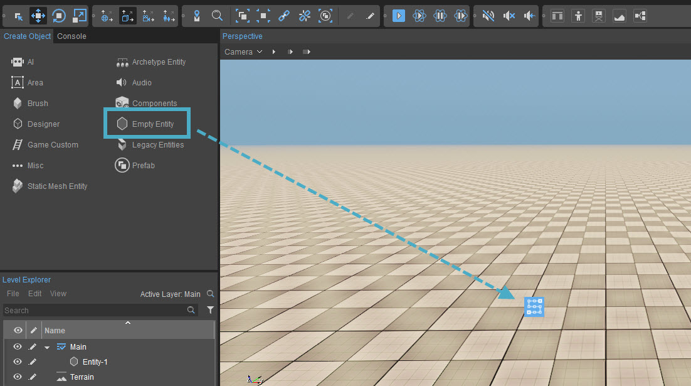
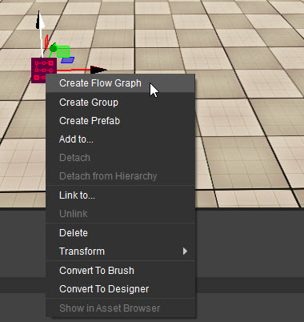
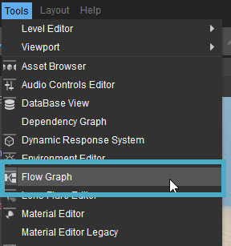
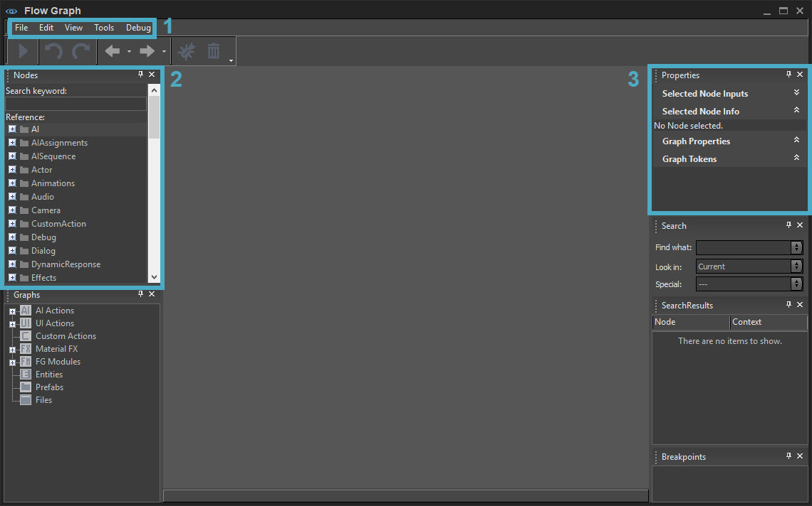

Scripting Overview
Scripting through a graphing interface lends itself to designers or artists for rapid prototyping without having the need for C# or C++ knowledge to compile out new game code. This can only get you so far though and you should take this into account when you may hit possible roadblocks to creating complex gameplay that is also performant. For the majority of this tutorial we will be using GameSDK to utilize the various entities that have been exposed through Lua scripting, thus allowing for us to prototype even faster.
Adding a Flow Graph and Opening Flow Graph
Follow these below mentioned steps to create and start using a graph in your game:
- Click Create Object -> Empty Entity and drag it into your level.
- Right click on the entity icon, select Create Flow Graph and name it "flowQuickStart".
- Flow Graph will pop up automatically on graph creation. If it doesn't, you can still access the tool from Tools -> Flow Graph.
- Lastly, we will focus initially on highlighting the menu (1), the nodes (2) and the Properties panel (3) of those nodes on the opposite side. Keep in mind that Flow Graph is very powerful but we will build up to the rest of the panels as we move forward.
Step 1

Step 2

Step 3

Step 4
